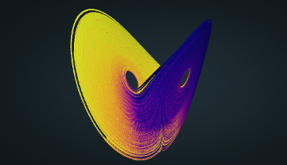

Chaotic Clouds
Interactive rendering of 3D strange attractors[w] using
Potree ("WebGL based point cloud renderer for large point clouds").
Chemical Lorentz
Lorentz's attractor [w] colored using an analogy with chemical reaction.
About 1 million points.

Thomas' attractor
The Thomas' symmetric attractor [w] is derived from a simple equation with only one parameter (b):
dx/dt = sin(y) - bx
dy/dt = sin(z) - by
dz/dt = sin(x) - bz
Rendered using about 700k points (b=0.192).
info
Python and Julia notebooks can be found here